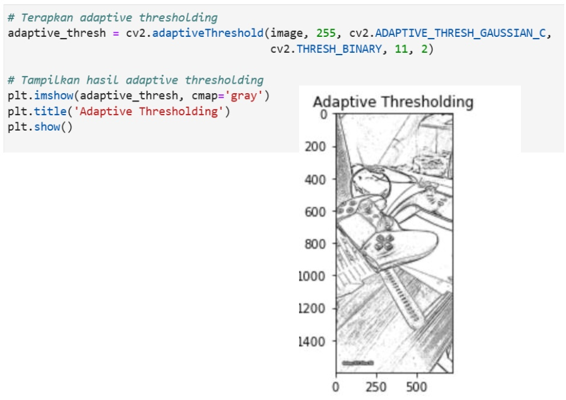

Pertemuan 6: SEGMENTASI CITRA
Materi ini membahas Segmentasi Citra dalam Pengolahan Citra Digital
Sub-Topik:
- Segmentasi Citra
- Thresholding Dalam Segmentasi Citra
- Active Contour (Snakes) Dalam Segmentasi Citra
- Perbaikan citra dengan operasi Transformasi
Segmentasi Citra
Segmentasi citra adalah proses pembagian atau pemisahan gambar digital menjadi beberapa bagian atau region, dengan tujuan untuk menyederhanakan atau mengubah representasi gambar sehingga lebih mudah untuk dianalisis. Segmentasi citra biasanya digunakan untuk mengidentifikasi objek atau batas (misalnya, garis, kurva) dalam sebuah gambar. Dalam segmentasi citra, setiap piksel pada gambar diberikan label tertentu sehingga piksel dengan label yang sama berbagi karakteristik visual tertentu, seperti warna, intensitas, atau tekstur. Metode ini sangat penting dalam berbagai aplikasi pengolahan citra seperti pengenalan objek, analisis medis, dan pengawasan.
Thresholding Dalam Segmentasi Citra
Thresholding adalah salah satu metode paling sederhana dan umum digunakan dalam segmentasi citra. Pada dasarnya, thresholding mengubah citra menjadi citra biner (dua tingkat warna) dengan membagi piksel berdasarkan nilai ambang (threshold) tertentu. Piksel yang memiliki nilai intensitas di atas atau di bawah nilai threshold tersebut akan dikelompokkan ke dalam kelas yang berbeda, seperti latar depan (foreground) atau latar belakang (background).
Cara Kerja Thresholding
- Setiap piksel dalam gambar memiliki nilai intensitas. Untuk gambar grayscale, nilai intensitas piksel berkisar antara 0 (hitam) hingga 255 (putih).
- Dengan thresholding, kita memilih nilai ambang (threshold), misalnya T=128T = 128T=128. Semua piksel dengan nilai intensitas lebih tinggi dari threshold tersebut akan diubah menjadi nilai maksimal (biasanya putih atau 255), dan piksel dengan nilai intensitas di bawah threshold akan diubah menjadi nilai minimal (biasanya hitam atau 0).
Jenis-jenis Thresholding
- Global Thresholding: Pada metode ini, satu nilai threshold TTT yang konstan diterapkan ke seluruh gambar. Teknik ini baik jika pencahayaan dan intensitas gambar seragam.
- Adaptive Thresholding: Alih-alih menggunakan satu nilai threshold untuk seluruh gambar, metode ini menghitung nilai threshold yang berbeda untuk wilayah kecil (blok) dari gambar. Adaptive thresholding berguna untuk gambar dengan pencahayaan yang tidak merata.
- Otsus Thresholding: Otsus method adalah teknik thresholding global yang menentukan nilai ambang optimal dengan meminimalkan varians intra-kelas (perbedaan di dalam kelas foreground dan background). Teknik ini efektif ketika terdapat perbedaan yang jelas antara latar depan dan latar belakang.
Contoh Penerapannya Pada Python

Gambar 6.1: Kode Python & output Global Thresholding
Gambar 6.2: Kode Python & output Adaptive Thresholding

Gambar 6.3: Kode Python & output Otsus Thresholding
Active Contour (Snakes) Dalam Segmentasi Citra
Active Contour Models (ACM), yang juga dikenal sebagai "Snakes", adalah salah satu teknik segmentasi citra berbasis kurva yang dinamis. Teknik ini bertujuan untuk menemukan batas atau kontur objek dalam gambar secara iteratif, dengan memanfaatkan informasi internal (bentuk dan energi kurva) dan eksternal (fitur gambar seperti tepi atau gradien). Model ini pertama kali diperkenalkan oleh Kass et al. pada tahun 1987. Active contour bekerja dengan memulai dari posisi awal (initialization) kurva atau garis, yang kemudian diperbarui secara iteratif untuk mendekati batas objek berdasarkan kekuatan internal dan eksternal. Teknik ini sangat populer di bidang pengolahan citra medis dan deteksi objek karena kemampuan adaptifnya dalam mengikuti bentuk objek yang kompleks.
Active Contour berkerja dengan cara Energi Internal: Mengendalikan kelancaran dan kontinuitas kontur. Energi ini mengatur agar kurva tetap halus dan tidak terputus selama proses iterasi. Energi internal membantu mengontrol bentuk kurva sehingga tidak berubah secara tiba-tiba. Dan juga Energi Eksternal: Berhubungan dengan fitur citra, seperti tepi, gradien, atau intensitas piksel. Energi eksternal mendorong kurva untuk mendekati batas objek dalam citra. Fitur ini mendorong kontur ke arah bagian gambar yang mengandung informasi tepi yang signifikan.
Contoh Penerapannya Pada Python

Gambar 6.4: Kode & Output Python Penggunaan Active Contour
Penjelasan kode:
- Inisialisasi Kurva: Lingkaran digunakan sebagai kurva awal di sekitar objek yang ingin disegmentasi.
- Active Contour: Fungsi active_contour dari pustaka scikit-image diterapkan pada citra yang telah dihaluskan dengan Gaussian filter untuk mengurangi noise.
- Parameter Alpha, Beta, dan Gamma: Alpha mengontrol kekuatan elastisitas, beta mengontrol kelancaran, dan gamma mengontrol kecepatan iterasi kurva.